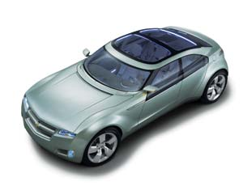
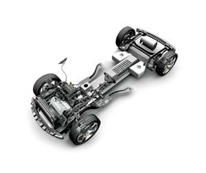
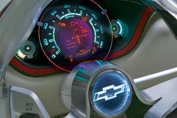
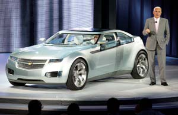

General Motors unveiled the Chevrolet Volt concept car in early 2007, electrifying the automotive world and exciting those clamoring for revolutionary progress in sustainable transportation. A stylish and sleek coupe with room for four, the Volt also happens to be a plug-in electric vehicle with fuel economy up to 150 miles per gallon. If GM builds it - and that’s still a big if - the Volt could usher in a new era of practical electric cars for the masses and go a long way toward helping America end its much-lamented but ever-growing addiction to oil.
What makes the Volt tick is General Motor’s new E-Flex system, which uses an electric generator, an electric motor, an advanced lithium-ion battery pack and a three-cylinder internal combustion engine. The keystone of the E-Flex system is the battery pack, which consists of hundreds of individual lithium-ion cells and the software that manages them. The batteries can be fully recharged by plugging the car into a standard electrical outlet for about six hours. The small gas engine powers the electric generator, which has two functions: recharge the battery pack when needed and provide extra juice to propel the car at freeway speeds.
The "flex" in E-Flex is twofold: the gas engine is flex-fuel, meaning it can burn gasoline or E85 (85 percent ethanol, 15 percent gasoline); and the E-Flex drive is flexible such that it can use a diesel engine or a hydrogen-powered fuel cell instead of a gas engine.
But regardless of whether it’s a conventional gas engine or a futuristic fuel cell, that component of the E-Flex system does not directly power the car. Its role is to power the generator, which provides electricity to propel the car and/or recharge the batteries when needed. That’s how the Volt would differ from current gasoline-electric hybrids such as the Honda Civic Hybrid and Toyota Prius, which are much more dependent on gas. Their electric motors supplement their gas engines; either the motor or the engine can directly power the vehicles.
With the Volt concept, GM’s goal is to blend the best features of electric vehicles and hybrids, and bring to market - perhaps as early as 2010 - a small family car that uses the E-Flex system. GM says the Volt will deliver all-electric driving, meaning zero gas burned, for up to 40 miles in city conditions. At 60 miles of driving, the Volt’s fuel economy would be 150 mpg; at 80 miles, 100 mpg. Beyond that, if the driver can’t recharge via a plug-in outlet, the engine recharges the batteries and the Volt’s fuel economy drops to a still respectable 50 mpg. All this combined, GM says, would propel the car 640 miles on just 12 gallons of fuel, enough to go nonstop from Detroit to Washington, D.C.
While the engine can recharge the batteries, it’s far more economical - and potentially cleaner in terms of emissions - to use the local electric grid rather than gasoline, ethanol or biodiesel. Assuming the local utility’s rate is 10 cents per kilowatt hour (the national average), it would cost about $1.50 to fully charge the car. Driving a typical hybrid 40 miles will cost you $2.50 to $3.00, depending on the hybrid’s fuel economy and the current price of gasoline. Volt owners who only drive short distances could recharge every night and go indefinitely without having to buy gas. And if recharged with renewable energy, such as solar or wind, the car would produce zero or nearly zero emissions.
Obviously the Volt concept is appealing, but there’s a significant hurdle to clear before the Volt can move beyond the concept stage - the lithium-ion battery pack. While lithium-ion batteries are already in use in many rechargeable power tools, it will take more technological breakthroughs before they are feasible to power electric cars produced in great numbers. Many think that breakthrough is only a few years away; numerous research and development companies worldwide are working on advanced lithium-ion batteries.
Andrew Burke, a battery expert and engineering professor at the University of California, Davis, has three concerns about the Volt program: the life cycle of the batteries, their safety and their cost. He estimates a current 16 kilowatt hour lithium-ion battery pack (like that used in the Volt concept) would cost up to $16,000. Burke says that as of yet, "nobody has the perfect battery."
This is why General Motors cautions that it will build the Volt only as soon as the appropriate battery technology is available. But GM executives appear confident they can solve the problems, and have established research partnerships with advanced battery developers. "We are 100 percent committed to making this happen," says GM vice chairman Robert Lutz. "This is probably the toughest and most exciting effort GM has undertaken."
Given General Motors’ history with false starts on electric cars, some question whether the automaker sincerely wants to build the Volt, or is just looking to improve its image. Last summer, GM’s financial troubles were compounded by heat from the documentary Who Killed the Electric Car?, which chronicles the demise of GM’s EV1 and other electric cars (read a summary and review of the movie at www.MotherEarthNews.com). But GM says it has learned from the experience. Larry Burns, GM vice president of research and development and strategic planning, says that electric cars such as the Volt are now a part of General Motors’ DNA. And, given the new reality of high gas prices, the public’s growing concerns about global warming and GM’s desire to be at the forefront of advanced transportation technology, the stakes are higher now than ever before.
|
 GENERAL MOTORS 150 miles per gallon, what a concept! General Motors hopes to produce the Chevrolet Volt as soon as advanced battery technology is available. |
 GENERAL MOTORS The new E-Flex system utilizes an electric generator, electric motor, advanced lithium-ion battery pack and a three-cylinder internal combustion engine to dramatically reduce its fuel dependency from current hybrid standards. |
 GENERAL MOTORS Even mixing city and highway miles, the Volt can travel up to 640 miles on just 12 gallons of fuel. |
|
 GENERAL MOTORS GM vice chairman Robert Lutz reveals an exciting new electric car design, the Chevrolet Volt. |
|
|